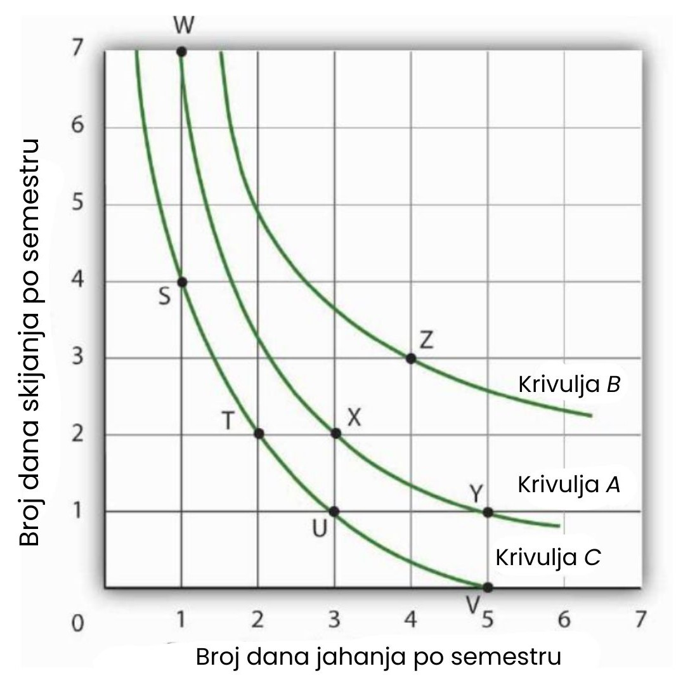
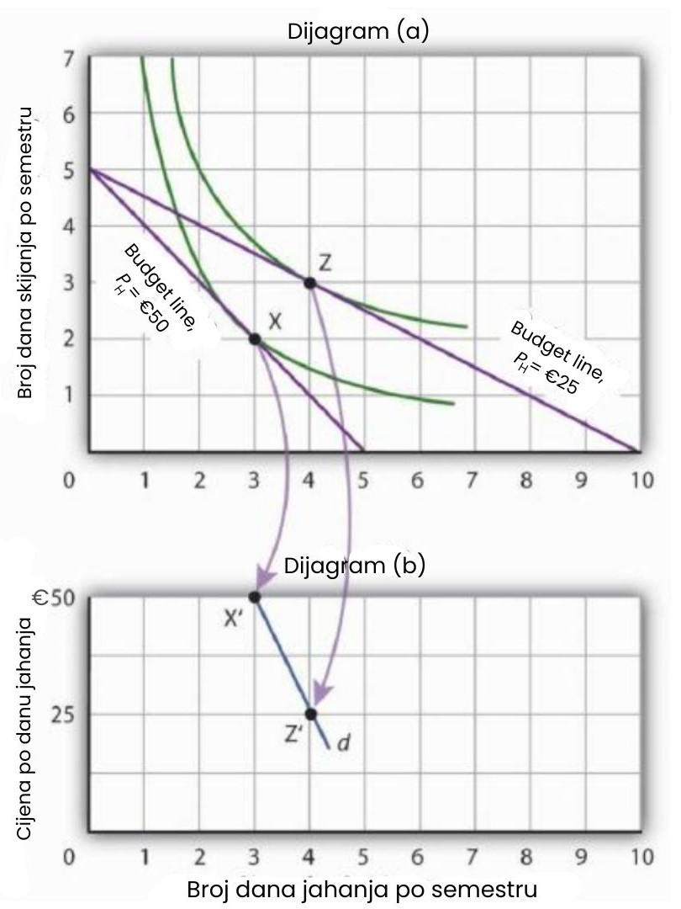

Analiza indiferentne krivulje: Alternativni pristup razumijevanju izbora potrošača
Ekonomisti obično koriste drugačiji skup alata od onih predstavljenih u ovom poglavlju do sada za analizu potrošačkih izbora. Iako su nešto složeniji, alati prikazani u ovom dijelu pružaju snažan okvir za procjenu potrošačkih odluka.
Analiza proračunskog ograničenja
Počet ćemo analizu algebarskim i grafičkim prikazom proračunskog ograničenja. Nakon toga, istražit ćemo novi koncept koji nam omogućuje da nacrtamo kartu potrošačkih preferencija. Na temelju toga moći ćemo izvući zaključke o odlukama koje bi potrošač, usmjeren na maksimizaciju korisnosti, mogao donijeti.
Proračunska linija
Kao što smo već vidjeli, izbori potrošača ograničeni su raspoloživim proračunom. Ukupna potrošnja na dobra i usluge može biti manja ili jednaka proračunskom ograničenju, ali je ne smije prelaziti.
Algebarski, proračunsko ograničenje za dva dobra X i Y možemo zapisati kao:
PXQX + PYQY ≤ B
gdje su PX i PY cijene dobara X i Y, a QX i QY količine odabranih dobara X i Y. Ukupni prihod dostupan za potrošnju na ta dva dobra je B, odnosno proračun potrošača. Jednadžba znači da ukupni izdaci za dobra X i Y (lijeva strana jednadžbe) ne mogu premašiti B.
Pretpostavimo da studentica Janet Bain uživa u skijanju i jahanju. Dan proveden u jednoj od tih aktivnosti košta 50 eura. Pretpostavimo da ima 250 eura dostupnih za ove dvije aktivnosti tijekom semestra. Proračunsko ograničenje gospođice Bain prikazano je na slici u nastavku.
Za potrošača koji kupuje samo dva dobra, proračunsko ograničenje može se prikazati proračunskom linijom. Proračunska linija grafički prikazuje kombinacije dvaju dobara koje potrošač može kupiti s danim proračunom.
Proračunska linija pokazuje sve kombinacije skijanja i jahanja koje gospođa Bain može priuštiti sa svojim proračunom od 250 eura. Također, može potrošiti manje od 250 eura, birajući kombinacije koje su ispod i lijevo od proračunske linije na slici. Kombinacije iznad i desno od linije su izvan dosega njezina proračuna.
Proračunska linija prikazuje kombinacije dana skijanja i jahanja koje Janet Bain može konzumirati ako je cijena svake aktivnosti 50 dolara, a ona ima 250 eura na raspolaganju po semestru. Nagib te proračunske linije je −1, što je negativni omjer cijene jahanja i cijene skijanja.
Vertikalni presjek proračunske linije (točka D) prikazuje broj dana skijanja mjesečno koje bi gospođa Bain mogla ostvariti kada bi cijeli svoj proračun potrošila isključivo na skijanje, bez jahanja. Ima 250 eura, a jedan dan skijanja košta 50 eura. Ako bi cijeli iznos potrošila na skijanje, mogla bi skijati 5 dana po semestru. Time bi zadovoljila svoje proračunsko ograničenje, jer vrijedi:
50€ × 0 + 50€ × 5 = 250€
Horizontalni presjek proračunske linije (točka E) prikazuje broj dana koje bi mogla provesti u jahanju kada bi svih 250 eura potrošila isključivo na tu aktivnost. Mogla bi priuštiti 5 dana jahanja po semestru. To je također unutar njezina proračunskog ograničenja, jer vrijedi:
50€ × 5 + 50€ × 0 = 250€
Budući da je proračunska linija linearna, možemo izračunati njezin nagib između bilo koje dvije točke. Između točaka D i E, vertikalna promjena iznosi −5 dana skijanja, a horizontalna promjena 5 dana jahanja. Stoga je nagib −5/5 = −1. Općenito, nagib proračunske linije određujemo tako da pronađemo vertikalni i horizontalni presjek, a zatim izračunamo nagib između te dvije točke. Vertikalni presjek dobiva se tako da se proračun gospođe Bain (B) podijeli s cijenom skijanja (PS), koje je na vertikalnoj osi. Horizontalni presjek dobiva se dijeljenjem B s cijenom jahanja (PH), koje je na horizontalnoj osi.
Krivulje indiferencije
Pretpostavimo da gospođa Bain provede 2 dana skijajući i 3 dana jašući po semestru. Iz te kombinacije dviju aktivnosti dobit će određenu razinu ukupne korisnosti. Postoje i druge kombinacije tih dviju aktivnosti koje bi joj donijele istu razinu korisnosti. Kombinacije dvaju dobara koje daju jednake razine korisnosti prikazuju se na krivulji indiferencije. Budući da sve točke na krivulji indiferencije donose istu razinu korisnosti, ekonomisti kažu da je potrošaču svejedno između njih.
Slika 7.10 prikazuje krivulju indiferencije za kombinacije skijanja i jahanja koje pružaju jednaku ukupnu korisnost. Točka X označava početnu kombinaciju gospođe Bain – 2 dana skijanja i 3 dana jahanja po semestru. Krivulja indiferencije pokazuje da bi mogla ostvariti istu razinu korisnosti prelaskom u točku W, gdje bi skijala 7 dana i jahala 1 dan. Također bi mogla postići istu korisnost u točki Y, gdje bi skijala samo 1 dan, a provela 5 dana u jahanju. Gospođi Bain je svejedno između kombinacija W, X i Y. Pretpostavljamo da su oba dobra djeljiva, pa joj je svejedno između bilo koje dvije točke duž iste krivulje indiferencije.
Krivulja indiferencije A prikazana ovdje prikazuje kombinacije dana skijanja i jahanja koje pružaju istu razinu korisnosti. Janet Bain je stoga svejedno koju točku na toj krivulji odabere. Svaka točka ispod i lijevo od krivulje indiferencije pruža nižu razinu korisnosti, dok svaka točka iznad i desno od krivulje pruža višu razinu korisnosti.
Pogledajmo sada točku T. Ona sadrži isti broj dana skijanja kao i točka X, ali manje dana jahanja. Gospođa Bain stoga preferira točku X u odnosu na točku T. Slično, više voli točku X nego točku U. A što je s izborom između kombinacija u točki W i točki T? Budući da su kombinacije X i W jednako zadovoljavajuće, a Janet preferira X u odnosu na T, tada mora preferirati i W u odnosu na T.
Općenito, svaka kombinacija dvaju dobara koja se nalazi ispod i lijevo od krivulje indiferencije donosi manju korisnost od bilo koje kombinacije na samoj krivulji. Takve kombinacije su inferiorne u odnosu na one koje se nalaze na krivulji indiferencije.
Točka Z, s 3 dana skijanja i 4 dana jahanja, pruža više obiju aktivnosti u usporedbi s točkom X; stoga Z donosi veću razinu korisnosti. Također je superiorna u odnosu na točku W. Općenito, svaka kombinacija koja se nalazi iznad i desno od krivulje indiferencije je poželjnija od bilo koje točke na toj krivulji.
Možemo nacrtati krivulju indiferencije kroz bilo koju kombinaciju dvaju dobara. Slika 7.11 prikazuje krivulje indiferencije nacrtane kroz svaku od prethodno spomenutih točaka. Krivulja indiferencije A sa slike je inferiorna u odnosu na krivulju B. Gospođa Bain preferira sve kombinacije na krivulji B u odnosu na one na krivulji A, a sve kombinacije na krivulji C smatra inferiornima u odnosu na one na krivuljama A i B.
Iako su na slici prikazane samo tri krivulje indiferencije, u načelu se može nacrtati beskonačno mnogo takvih krivulja. Skup krivulja indiferencije za jednog potrošača čini svojevrsnu kartu koja prikazuje njegove preferencije. Različiti potrošači imat će različite karte, no s dobrim razlogom pretpostavljamo da sve krivulje indiferencije imaju istu osnovnu formu: naginju prema dolje i postaju sve manje strme kako se krećemo prema dolje i udesno duž krivulje.
Svaka krivulja indiferencije prikazuje kombinacije među kojima je potrošaču svejedno, one donose jednaku razinu korisnosti. Krivulje koje se nalaze više i desno na grafu poželjnije su od onih koje su niže i lijevo. U ovom slučaju, krivulja indiferencije B poželjnija je od krivulje A, koja je poželjnija od krivulje C.
Nagib krivulje indiferencije pokazuje stopu po kojoj se dva dobra mogu međusobno zamijeniti, a da se pritom ne promijeni razina korisnosti potrošača. Na slici je prikazana krivulja indiferencije C. Pretpostavimo da se gospođa Bain nalazi u točki S, gdje troši 4 dana na skijanje i 1 dan na jahanje po semestru. Ako odluči provesti još jedan dan jašući, njezina se korisnost neće promijeniti ako za to žrtvuje 2 dana skijanja i prijeđe u točku T. Dakle, spremna je odreći se 2 dana skijanja za drugi dan jahanja. Međutim, krivulja pokazuje da bi bila spremna odreći se najviše jednog dana skijanja kako bi dobila treći dan jahanja (što je prikazano točkom U).
Granična stopa supstitucije jednaka je apsolutnoj vrijednosti nagiba krivulje indiferencije. Ona pokazuje maksimalnu količinu jednog dobra koje je potrošač spreman žrtvovati kako bi dobio dodatnu jedinicu drugog dobra. U ovom slučaju, to je broj dana skijanja kojih bi se Janet Bain bila voljna odreći za dodatni dan jahanja. Važno je primijetiti da granična stopa supstitucije (MRS) opada kako provodi sve više dana jašući.
Maksimalna količina jednog dobra koju je potrošač spreman žrtvovati kako bi dobio dodatnu jedinicu drugog dobra naziva se granična stopa supstitucije (MRS), a ona je jednaka apsolutnoj vrijednosti nagiba krivulje indiferencije između dviju točaka. Slika pokazuje da, kako gospođa Bain sve više vremena posvećuje jahanju, stopa po kojoj je spremna žrtvovati dane skijanja za dodatne dane jahanja – njezina granična stopa supstitucije – opada.
Rješenje za maksimizaciju korisnosti
Pretpostavljamo da svaki potrošač teži postizanju najviše moguće krivulje indiferencije. Proračunska linija prikazuje kombinacije dvaju dobara koje potrošač može kupiti s određenim budžetom. Maksimizacija korisnosti stoga podrazumijeva odabir kombinacije dvaju dobara koja zadovoljava dva uvjeta:
- Točka u kojoj se korisnost maksimizira mora biti unutar dostupne regije definirane proračunskom linijom.
- Točka u kojoj se korisnost maksimizira mora se nalaziti na najvišoj krivulji indiferencije koja je u skladu s prvim uvjetom.
Slika kombinira proračunsku liniju Janet Bain s njezinim krivuljama indiferencije. Naša dva uvjeta za maksimizaciju korisnosti ispunjena su u točki X, gdje ona skija 2 dana po semestru i 3 dana provodi jašući.
Kombinirajući proračunsku liniju Janet Bain sa slike i krivulje indiferencije sa slike 7.11, pronalazimo točku koja (1) zadovoljava proračunsko ograničenje i (2) nalazi se na najvišoj mogućoj krivulji indiferencije. Za gospođu Bain ta se točka nalazi u točki X.
Najviša moguća krivulja indiferencije za zadanu proračunsku liniju je ona koja je tangenta na tu liniju; krivulja indiferencije i proračunska linija u toj točki imaju jednak nagib. Apsolutna vrijednost nagiba krivulje indiferencije pokazuje graničnu stopu supstitucije (MRS) između dvaju dobara. Apsolutna vrijednost nagiba proračunske linije prikazuje omjer cijena između tih dobara – to je stopa po kojoj se jedno dobro može zamijeniti za drugo na tržištu. U točki maksimizacije korisnosti stopa po kojoj je potrošač spreman zamijeniti jedno dobro za drugo jednaka je tržišnoj stopi zamjene između tih dobara.
Za bilo koja dva dobra X i Y, gdje je dobro X na horizontalnoj osi, a dobro Y na vertikalnoj osi, vrijedi:
Maksimizacija korisnosti i pravilo granične odluke
Kako se postizanje rješenja za maksimizaciju korisnosti povezuje s pravilom granične odluke? To pravilo kaže da se dodatne jedinice neke aktivnosti trebaju provoditi ako je granična korist od te aktivnosti veća od graničnog troška. Poštivanje tog pravila dovodi potrošača do najviše moguće krivulje indiferencije za zadani budžet.
Pretpostavimo da je gospođa Bain odabrala kombinaciju skijanja i jahanja prikazanu u točki S. Trenutno se nalazi na krivulji indiferencije C. Također se nalazi na svojoj proračunskoj liniji, koristi čitav svoj budžet od 250 eura za kupnju ta dva dobra.
Pretpostavimo da se gospođa Bain nalazi u početnoj točki S. Iako troši cijeli svoj budžet, još uvijek ne maksimizira korisnost. Budući da je njezina granična stopa supstitucije veća od stope po kojoj joj tržište nudi zamjenu skijanja za jahanje, može povećati svoju korisnost prelaskom u točku D. Sada se nalazi na višoj krivulji indiferencije, E. Nastavit će zamjenjivati dane skijanja za dane jahanja sve dok ne dosegne točku X, u kojoj se nalazi na krivulji A, najvišoj mogućoj krivulji indiferencije.
Zamjena dva dana skijanja za jedan dan jahanja dovodi je u točku T, gdje joj je jednako dobro kao i u točki S. Njezina granična stopa supstitucije između točaka S i T iznosi 2; njezina krivulja indiferencije je strmija od proračunske linije u točki S. Ta razlika nam govori da stopa po kojoj je spremna zamijeniti dobra nije jednaka tržišnoj stopi. Gospođa Bain je voljna odreći se čak 2 dana skijanja kako bi dobila dodatni dan jahanja, dok tržište od nje traži da se odrekne samo jednog dana skijanja. Prema pravilu granične odluke, ako dodatna jedinica aktivnosti donosi veću korist od njezina troška, ta se aktivnost treba provesti. Ako joj jedan dodatni dan jahanja vrijedi koliko i 2 dana skijanja, a može ga dobiti žrtvujući samo jedan dan skijanja, tada je korist tog dodatnog dana jahanja očito veća od njegova troška.
Budući da tržište od nje traži manju žrtvu nego što je spremna dati za dodatni dan jahanja, izvršit će zamjenu. Polazeći od točke S, zamijenit će dan skijanja za dan jahanja. Time se pomiče duž svoje proračunske linije u točku D. Prisjetimo se da kroz bilo koju točku možemo nacrtati krivulju indiferencije; sada se nalazi na krivulji E. Ta je krivulja iznad i desno od krivulje C, pa je gospođa Bain očito u boljoj situaciji. To nije iznenađenje — u točki S bila je voljna odreći se 2 dana skijanja za jedan dan jahanja, a tržište je tražilo samo jedan dan skijanja. Dodatni dan jahanja dobila je po "sniženoj cijeni"!
Njezin pomak s točke S na D duž proračunske linije otkriva važno načelo: ako krivulja indiferencije presijeca proračunsku liniju, tada će potrošač uvijek moći napraviti zamjene koje ga pomiču na višu krivulju indiferencije. Nova krivulja indiferencije gospođe Bain u točki D također presijeca njezinu proračunsku liniju; još je uvijek voljna odreći se više skijanja nego što tržište traži za dodatno jahanje. Izvršit će još jednu zamjenu i pomaknuti se duž proračunske linije do točke X, gdje dostiže najvišu krivulju indiferencije moguću s danim budžetom. Točka X se nalazi na krivulji A, koja je tangenta na proračunsku liniju.
U točki X, gospođa Bain očito ne bi više žrtvovala dane skijanja za dodatne dane jahanja. Nakon te točke, njezina krivulja indiferencije postaje ravnija od proračunske linije – njezina granična stopa supstitucije manja je od apsolutne vrijednosti nagiba proračunske linije. To znači da je stopa po kojoj bi bila voljna zamijeniti skijanje za jahanje manja od tržišne stope. Ne može dodatno poboljšati svoju korisnost daljnjom preraspodjelom potrošnje. Točka X, u kojoj je stopa po kojoj je spremna zamijeniti dobra jednaka tržišnoj stopi, donosi joj maksimalnu moguću korisnost.
Maksimizacija korisnosti i potražnja
Prethodna slika prikazala je rješenje za maksimizaciju korisnosti Janet Bain u kontekstu skijanja i jahanja. Postigla ga je odabirom točke u kojoj je njezina krivulja indiferencije tangenta na proračunsku liniju. Međutim, promjena cijene jednog od dobara pomiče proračunsku liniju. Promatrajući što se događa s količinom traženog dobra, možemo izvesti krivulju potražnje gospođe Bain.
Dijagram (a) slike prikazuje izvorno rješenje u točki X, gdje Janet Bain ima 250 eura za potrošiti, a cijena dana skijanja i dana jahanja iznosi 50 dolara. Pretpostavimo sada da cijena jahanja padne za polovicu, na 25 eura. To mijenja horizontalni presjek proračunske linije – ako sav novac potroši na jahanje, sada može jahati 10 dana po semestru. Drugi način razmišljanja o novoj proračunskoj liniji jest sjetiti se da je njezin nagib jednak negativnom omjeru cijene dobra na horizontalnoj osi i cijene dobra na vertikalnoj osi. Kada cijena jahanja (dobra na horizontalnoj osi) padne, proračunska linija postaje ravnija. Gospođa Bain odabire novo rješenje za maksimizaciju korisnosti u točki Z.
Promatranjem reakcije potrošača na promjenu cijene možemo izvesti njegovu krivulju potražnje za nekim dobrom. Dijagram (a) pokazuje da pri cijeni jahanja od 50 eura po danu Janet Bain odlučuje provesti 3 dana po semestru jašući. Dijagram (b) prikazuje da pad cijene na 25 eura povećava njezinu traženu količinu na 4 dana po semestru. Točke X i Z, u kojima gospođa Bain maksimizira korisnost pri cijenama jahanja od 50, odnosno 25 eura, postaju točke X' i Z' na njezinoj krivulji potražnje za jahanjem u dijagramu (b).
Rješenje u točki Z uključuje povećanje broja dana koje gospođa Bain provodi jašući. Važno je primijetiti da se promijenila samo cijena jahanja; svi ostali elementi rješenja koje maksimizira korisnost ostali su nepromijenjeni. Gospođin budžet i cijena skijanja ostaju isti, što se vidi po tome što je vertikalni presjek proračunske linije ostao nepromijenjen. Njezine preferencije također se nisu promijenile; one su prikazane njezinim krivuljama indiferencije.
Budući da su svi ostali čimbenici nepromijenjeni, možemo iz dijagrama krivulja indiferencije odrediti dvije točke na krivulji potražnje za jahanjem. Pri cijeni od 50 eura, korisnost je maksimizirana u točki X, gdje Janet provodi 3 dana po semestru jašući. Kada cijena padne na 25 eura, korisnost je maksimizirana u točki Z, gdje jaše 4 dana po semestru. Te se točke zatim prikazuju kao X' i Z' na njezinoj krivulji potražnje za jahanjem u dijagramu (b) slike 7.15.
Sažetak
- Proračunska linija prikazuje kombinacije dvaju dobara koje potrošač može konzumirati s obzirom na proračunsko ograničenje.
- Krivulja indiferencije prikazuje kombinacije dvaju dobara koje potrošaču pružaju jednaku razinu zadovoljstva (korisnosti).
- Kako bi maksimizirao korisnost, potrošač bira kombinaciju dvaju dobara u kojoj je krivulja indiferencije tangentna na proračunsku liniju.
- U rješenju koje maksimizira korisnost, marginalna stopa supstitucije (apsolutna vrijednost nagiba krivulje indiferencije) jednaka je omjeru cijena dvaju dobara.
- Krivulju potražnje možemo izvesti iz karte indiferencije promatrajući količinu određenog dobra koja se konzumira pri različitim cijenama.